Gallery
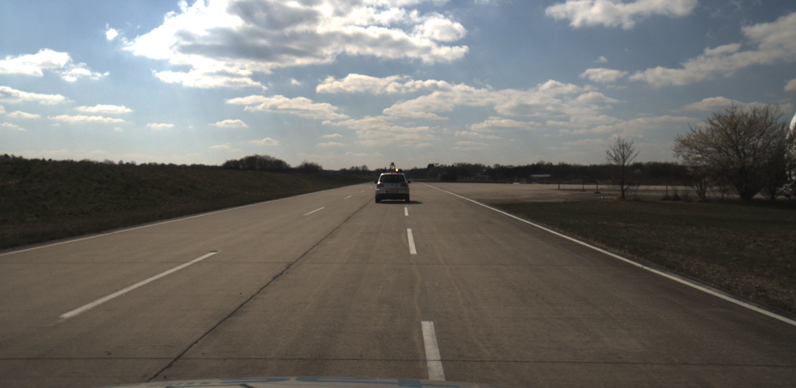
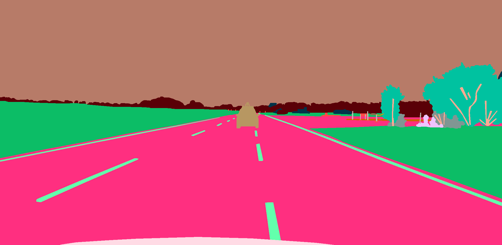
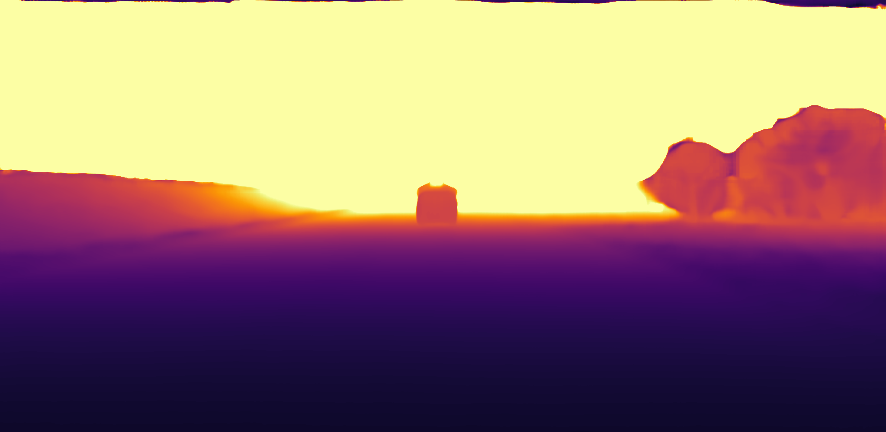
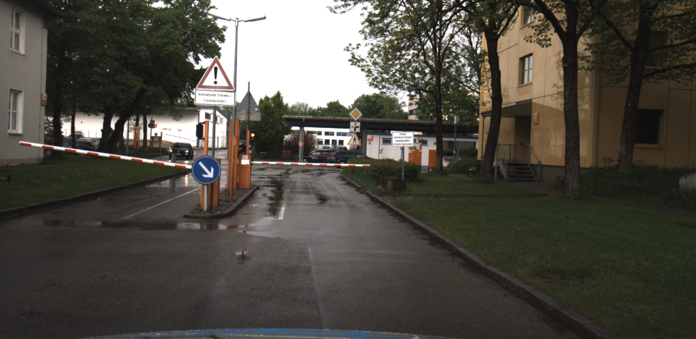
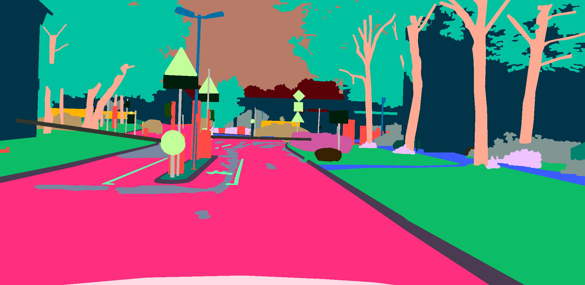
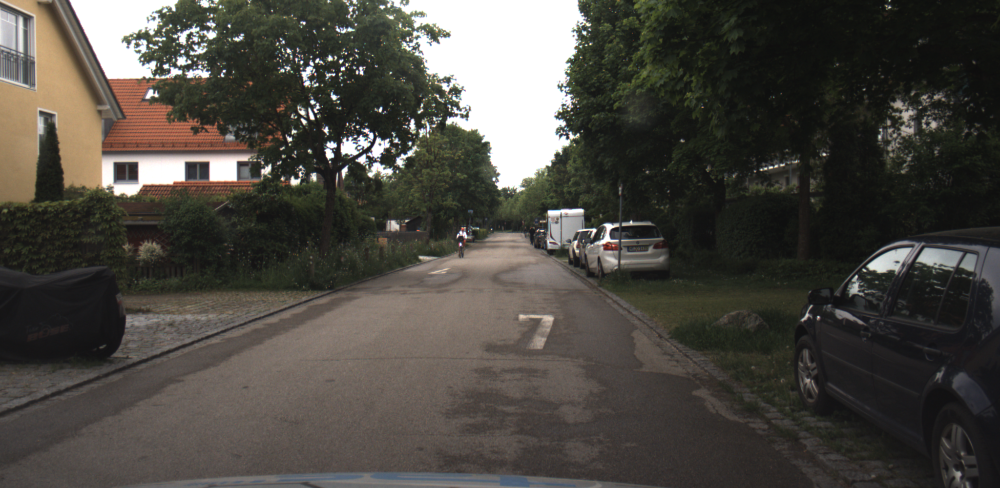
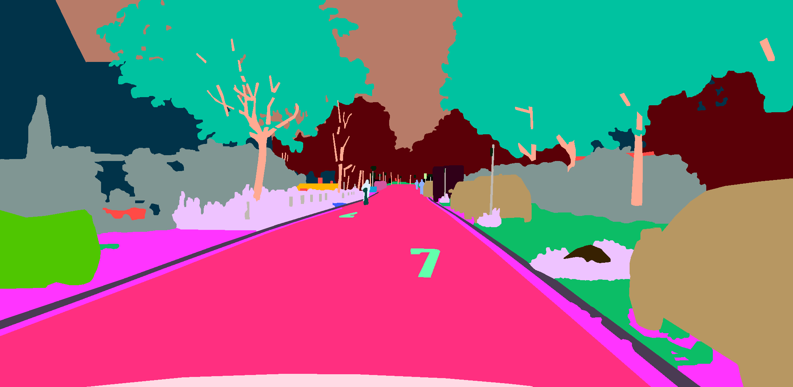
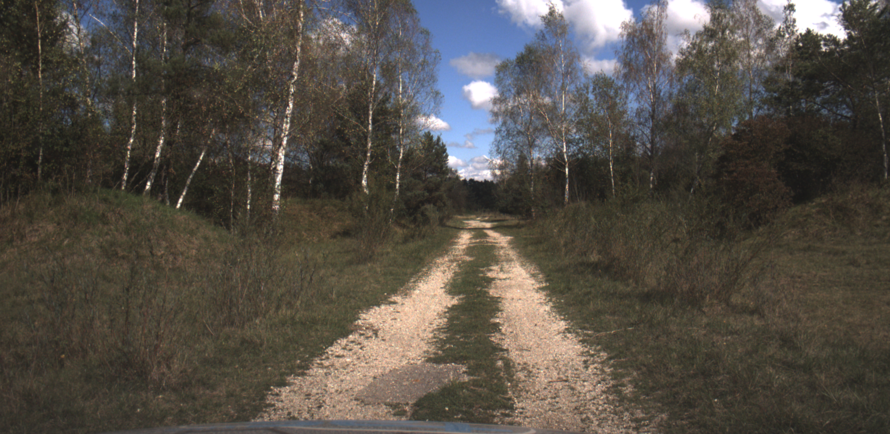
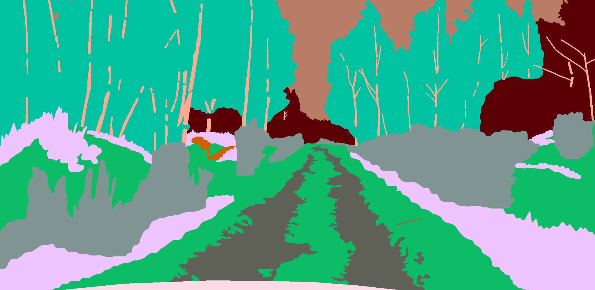
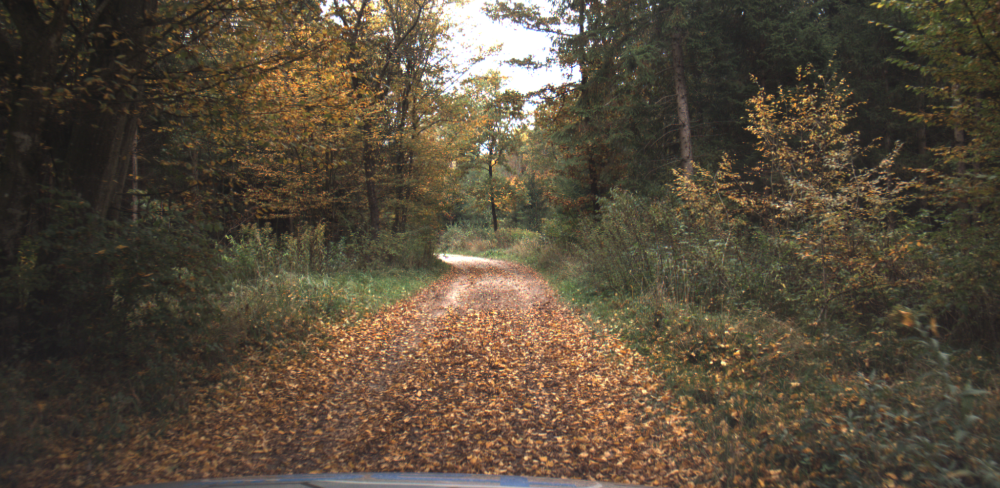
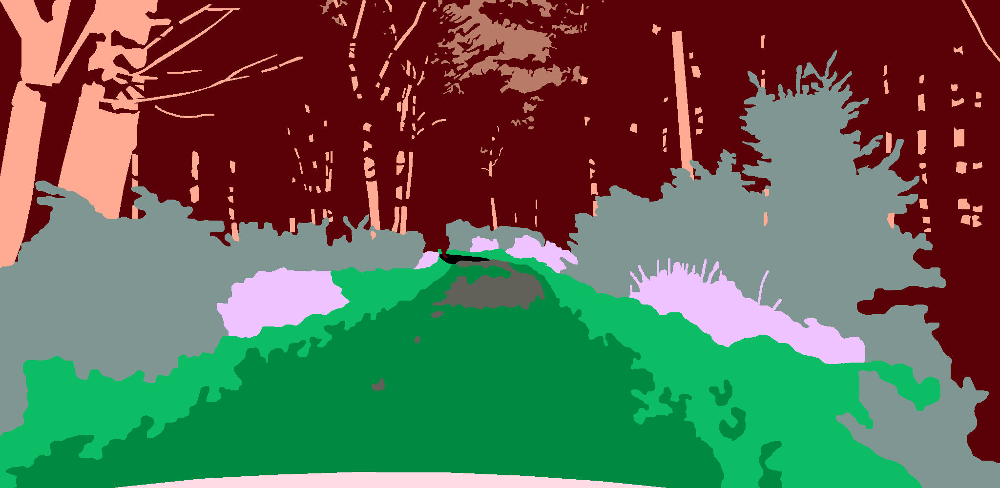
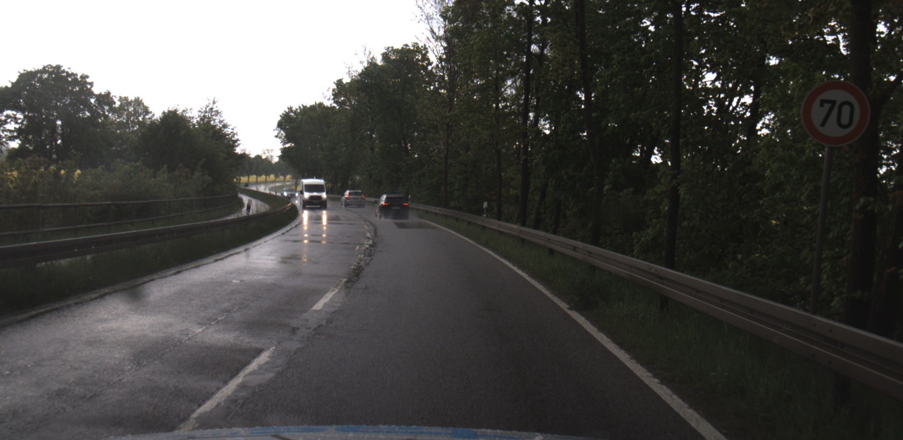
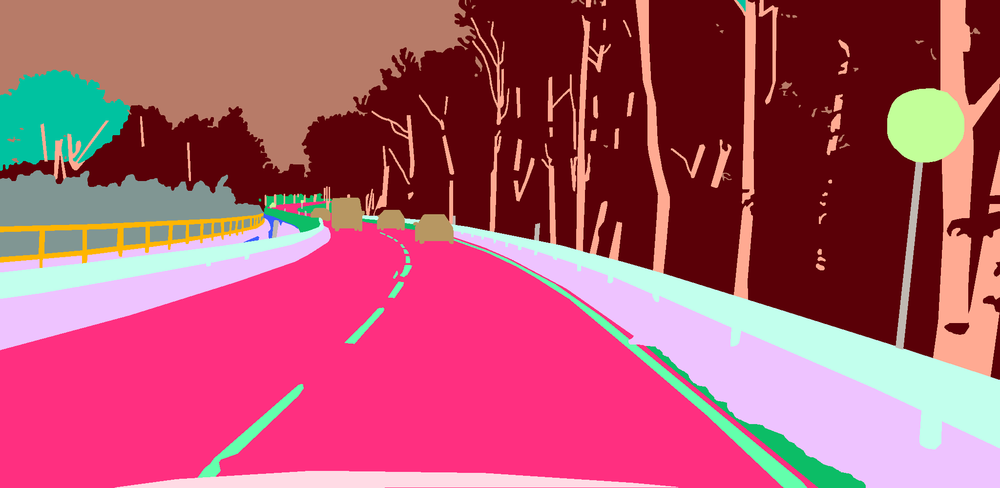
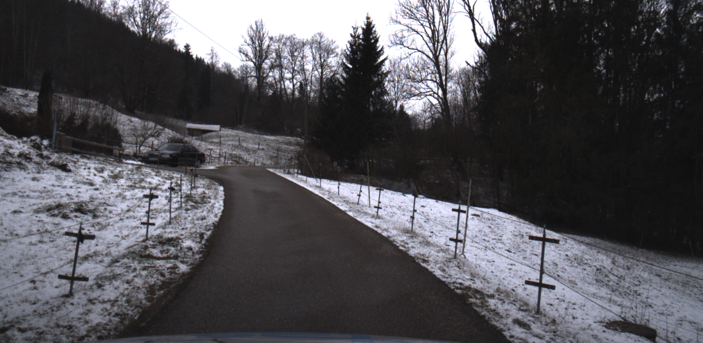
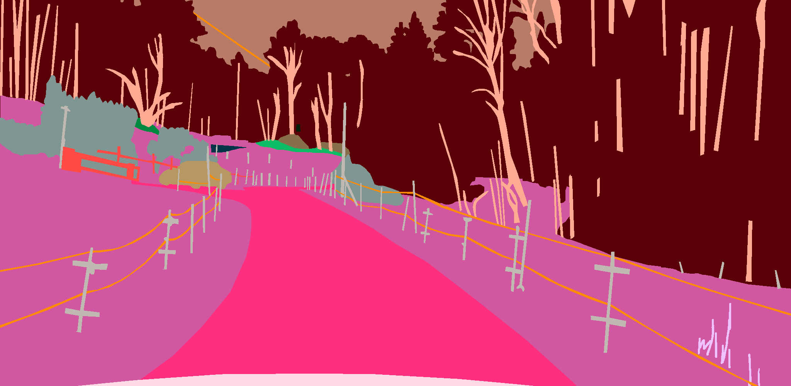
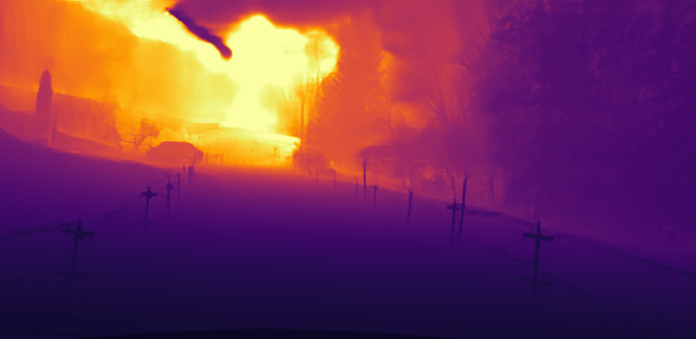
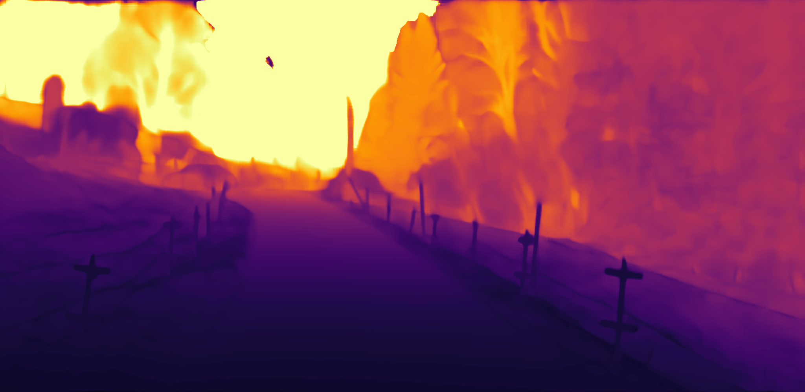
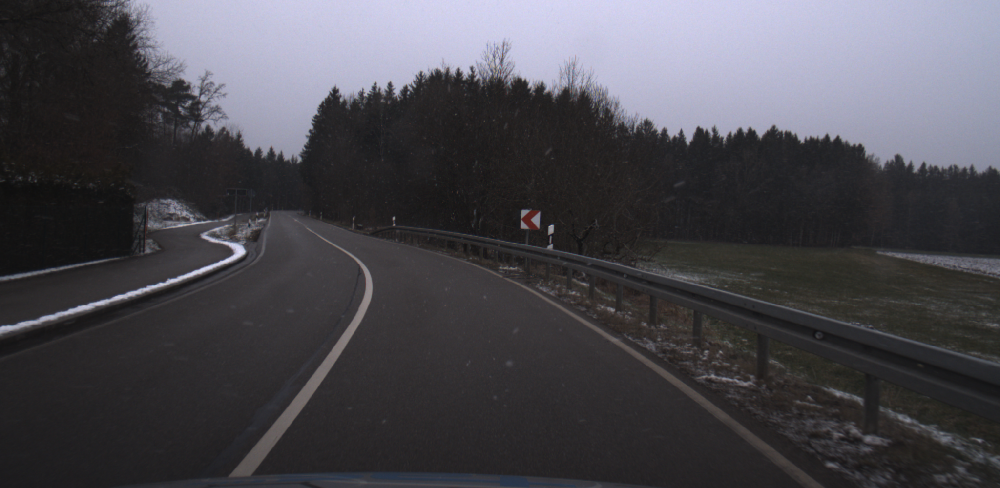

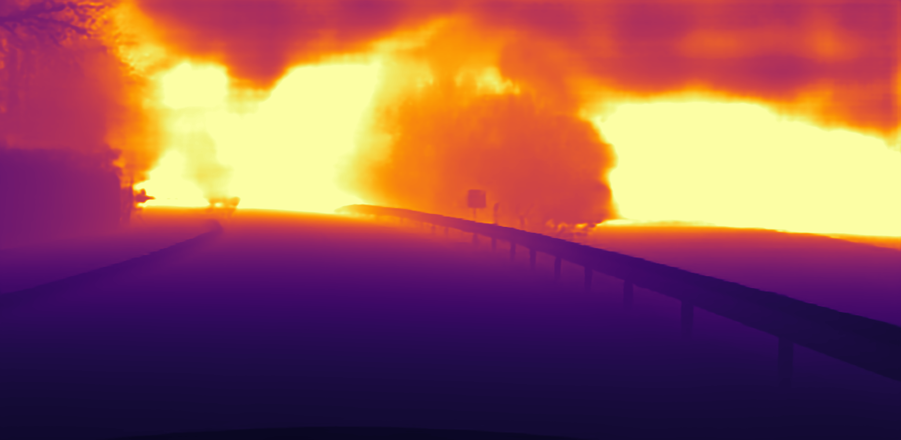
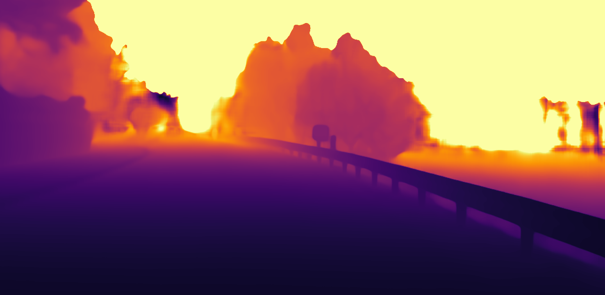
The top row shows the original image and its segmentation mask from the German Outdoor and Offroad Dataset. The bottom row shows the respective depth maps predicted by Depth Anything V2 ViT-L, which performs best according to our metric, and Metric3D V2 ViT-G2, which performs best according to RMSE.